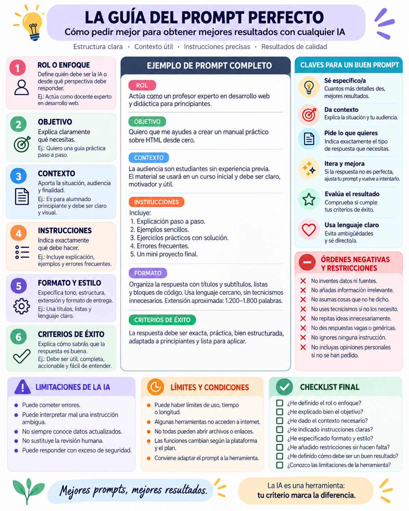

“Hazme una web de veterinaria.”
La IA tendrá que decidir el objetivo, las secciones, los contenidos y la acción principal.
Planificación y diseño · Manual
Usa Stitch para comprobar una idea fundamental: diseñar con inteligencia artificial exige saber qué interfaz se necesita y saber pedirla.
Idea clave: si no sé cómo se estructura una web, tampoco sé pedírsela bien a una IA.
Hasta ahora has diseñado interfaces de forma manual en Penpot. Ya conoces páginas, cabeceras, botones, tarjetas, formularios, componentes, filas, columnas, espaciados y jerarquía visual.
Google Stitch es una herramienta de diseño de interfaces asistida por IA. A partir de una descripción escrita puede proponer una interfaz de alta fidelidad. No dibujamos cada elemento uno a uno: explicamos qué queremos construir.
La IA tendrá que decidir el objetivo, las secciones, los contenidos y la acción principal.
Indica el público, objetivo, estructura, contenido y estilo. Tú conservas las decisiones de diseño importantes.
Antes de empezar, visualiza este vídeo de introducción. Mientras lo ves, identifica qué decisiones sigue tomando la persona que diseña y cuáles puede proponer la IA.
¿No se carga el reproductor? Ver el vídeo en YouTube ↗
Un prompt es la instrucción que damos a una herramienta de inteligencia artificial. Cuanto más claro y útil sea el contexto, más fácil será obtener una propuesta que puedas evaluar y mejorar.
“Hazme una web para un gimnasio.”
“Diseña una landing responsive para un gimnasio dirigido a adultos de 25 a 50 años. Incluye header con navegación y CTA de inscripción, hero, actividades mediante tarjetas, horarios, tarifas, entrenadores, testimonios, formulario y footer.”

Antes de abrir Stitch, organiza mentalmente la página. Por ejemplo, una clínica veterinaria podría necesitar:
Logotipo, Inicio, Servicios, Equipo, Contacto y botón “Pedir cita”.
Título, texto introductorio, imagen y llamada a la acción.
Tarjetas para consulta, vacunación, urgencias o cirugía.
Dirección, teléfono, horario, formulario, enlaces legales y redes.
Esta estructura visual se convertirá más adelante en HTML y CSS:
<header>...</header>
<main>
<section class="hero">...</section>
<section class="servicios">
<article>...</article>
<article>...</article>
</section>
<section class="contacto">...</section>
</main>
<footer>...</footer>
Prueba primero una petición sencilla y observa qué decisiones ha tomado la herramienta. Después utiliza un prompt con requisitos concretos:
Diseña una landing page responsive para una clínica veterinaria llamada HuellaVet. El público principal son personas que tienen perros y gatos. La página debe transmitir confianza, profesionalidad y cercanía. Incluye una cabecera con logotipo, Inicio, Servicios, Equipo y Contacto, además de un botón destacado para pedir cita. Crea una sección hero con título, texto, una imagen de una veterinaria atendiendo a un perro y el botón “Pide tu cita”. Después añade una sección de servicios con cuatro tarjetas: consulta veterinaria, vacunación, cirugía y urgencias. Añade una sección sobre la clínica con imagen y texto, tres opiniones de clientes y una sección de contacto con dirección, teléfono, horario y formulario. Termina con un footer de contacto, enlaces legales y redes sociales. Utiliza un diseño moderno, limpio y accesible, con colores suaves y buena separación entre elementos.
No necesitas acertar a la primera. Observa el resultado y usa nuevas instrucciones para mejorarlo:
“Haz más visible la llamada a la acción.”
“Reorganiza los servicios en una cuadrícula de tres columnas.”
“Reduce el tamaño de la sección principal.”
“Simplifica el footer y reduce el número de enlaces.”
Reto: no existe un diseño que tengas que copiar. Elige una idea propia: academia, tienda, gimnasio, peluquería, asociación, restaurante, protectora, biblioteca, agencia de viajes, videojuego o portfolio.
La inteligencia artificial puede generar una interfaz, pero necesita que nosotros sepamos qué interfaz queremos.
Aprender HTML, CSS, diseño y estructura web no pierde importancia al utilizar IA. Al contrario: cuanto más sabes, mejores instrucciones puedes dar y mejor puedes evaluar los resultados.